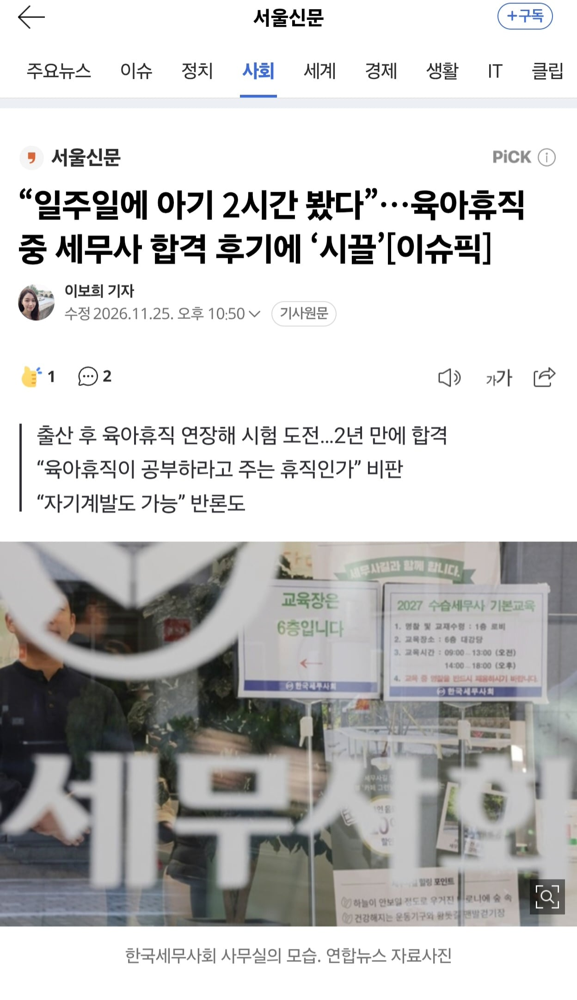

아기 2시간만 보고 부모님한테 맡기고
공부 올인하고 세무사합격

아기 2시간만 보고 부모님한테 맡기고
공부 올인하고 세무사합격
리트냥이가 심함 이게 더 심함?
뭔 리트냥이에 가져다대...
리트냥이는 걍 범죄자잖아..
긁어 부스럼의 정석.
SNS로 자기무덤파는사람 정말 많어~ ㅋㅋ
쟤도 63기냐
유아휴직하면서 공부나 이직 하는 사람도 많이 봐서 뭐가 문제인지는 모르겠는데
나도 갠적으론 그럼. 육휴 때 뭐 육아만하고 딴짓 안하는지 매주 감시할것도 아니고 법적으로 규제할것도 아니고... 육휴로 생기는 문제점들은 기업이 문제라 생각함. 그것까지 고려해서 인원 수를 배치를 하던가 더 고생하는 직원들을 진급이나 월급을 올려주던가해야지 기업은 그럴 생각없고 밑에 직원들만 더 힘들어지는 구조가 되는거 같음. 그렇다고 육휴로 인한 불이익을 주면 아무도 애를 낳으려고 안할거임.
하지만 현실적으로는 육휴에 따른 불이익이 있고 아이를 안가지는게 더 평범한 사회가 되고 있다보니까..
문제 : 꺼드럭
문제가 아니긴한데 그걸 SNS에떠벌리고 다니는게 저 직장동료입장에선 화날수있긴하겠지
그래서 육아휴직이 보편화안되는거지 뭐
그치 뭐가 문제인지 모르겠으니까 육휴쓰려고 하면 못쓰게 하고 내보내는 기업이 태반이지 ㅋㅋㅋ
못쓰게하면 문제되니까 성별기피로가거나 유리천장화됨
육휴동안 빈자리 참고 견뎠는데
돈다받고 올때되니 이직해버리니 빡친다고 그러더라
당사자가 안되어보면 모르는 빡침이지 ㅋㅋ
공부하고 실력늘려오면 대환영이지 본문은 이제 유급육휴 하다가 회사 그만둬버릴꺼 아님?
육휴는 돌아올걸 전제로 급여까지 기업에서 제공하면서 받고 있는 상태임. 근데 시험을 준비한다는건 붙으면 돌아올 생각이 없다는걸로 보일 수도 있어서 도덕적으로 문제가 있어보임.
육휴는 현재 근로자인 사람이 아이돌보는 것에 전념할수있도록 일정 급여를 주면서 쉬게 해주는 복지니까... 돈은 돈대로 다 받고 애는 맡기고 근로대체휴가인 중에 타사 이직 준비를 한거라 막진 못해도 도의적으로 구팀원들이 빡치긴할듯. 차라리 첨부터 나가는거 알았으면 인력대체라도 할텐데 돌아올때까지만 일 많은거 참자 했을거아님...
경조사 휴가 쓰고 다음날 출근해서 '어제 시간 남아서 분좋카 가서 사진도 찍고 놀았다' 하면 사무실에서 잘도 좋아하겠다. 걍 아가리 닫고 있으면 본인이 공가에 뭘 했는지 아무도 모르는데 왜 처 나대다가 욕 먹어놓고 이해를 못하는거냐. 육휴때 이직 준비 잘해서 점프했다 쳐. 근데 그걸 씨-발 '육휴때 공부해서 이직했다' 라고 하면 그거 들은 같은 부서 사람들이나 동종업계 사람들이 좋게 들리겠냐? 육휴대체자 뽑아놔도 원래 담당자 1인분 못해서 해당 팀원들한테 업무 더해지는거 안겪어봄? 어지간한 대기업이나 공공기관도 육휴 갔다가 오면 기피부서나 다른 부서 보내는 이유가 뭘 거 같은데.
ㅇㅇ 내가 같은부서면 힘 ㅈㄴ빠지긴할것같음 ㅋㅋ
늙크크인데 분좋카 배워간다
걍 직업이 간호사고 여초직장이라
더쿠였나 거기서 좀 불탔던거 아닌가 ㅋㅋㅋ
세무사가 ㅈ이 아닌데.. 갑자기 나타나는 비전공 천재들이 너무 많네
육아에 집중하라고 사회적 배려로 기준 느슨하게 두고 공적 준조세에서 돈 빼주는 건데 이것도 권리다 해버리면 깐깐해질수밖에없음
간호사사회는 잘 모르겠지만 일반사기업이면...아무것도모르는 계약직 데려다가 빵꾸존내내고 야근하면서 일하는데 당사자가 저러면 열받을거같긴해
1~2살 애기 케어하면서 고시를 합격한다고?
갑자기 대한민국 국민 지능수준이 다들 초인이 됐네
애기 케어는 합격자 부모가했음
저 지랄하니 육휴쓰는사람들 바라보는 시선이 좆같지ㅋㅋㅋㅋㅋㅋㅋ
육휴 제도적 허점 이용해먹은걸 SNS에 자랑질 하면서 상대적 박탈감 느끼게 한게 논점인거 같은데
육휴기간에 뭘 하던 상관있냐고 물타기 하는건 뭐지
배려 받았으면
배려도 할 줄 알아야지
뺑이쳐라 ㅋㅋ 하는거도 아니고
문제 될건 없잖아 부모님인데 ㅋ 하급자 불러서 공짜로 부린것도 아니고
뭘하든 문제될건 없는데 그걸 동네방네 떠들고 다니면 이슈화될건 뻔한거지. 그리고 이슈화되서 오는 불이익은 뭐 감내해야지
육아휴직 하고 애 없이 해외여행 가는거랑 이거랑 크게 다른가?
철퇴 좀 때려라 생리휴가든 육아휴가든 왜 엄한놈이 피해를 봐야하는지 모르겠네
이게 괜찮다는 사람들은 뭔가 책임이라는게 없나?
그냥 육휴 끝나면 의무1년근무라도 박아야 되는 수준이네..
공부를 하던 세계여행을 다니던 문제가 없는데 끝나고 퇴사가 가장 문제 아닌가?
솔직히 조용히 합격하고 퇴직하면 알빠노인데 저걸 떠벌리고 다니면 욕먹어야지